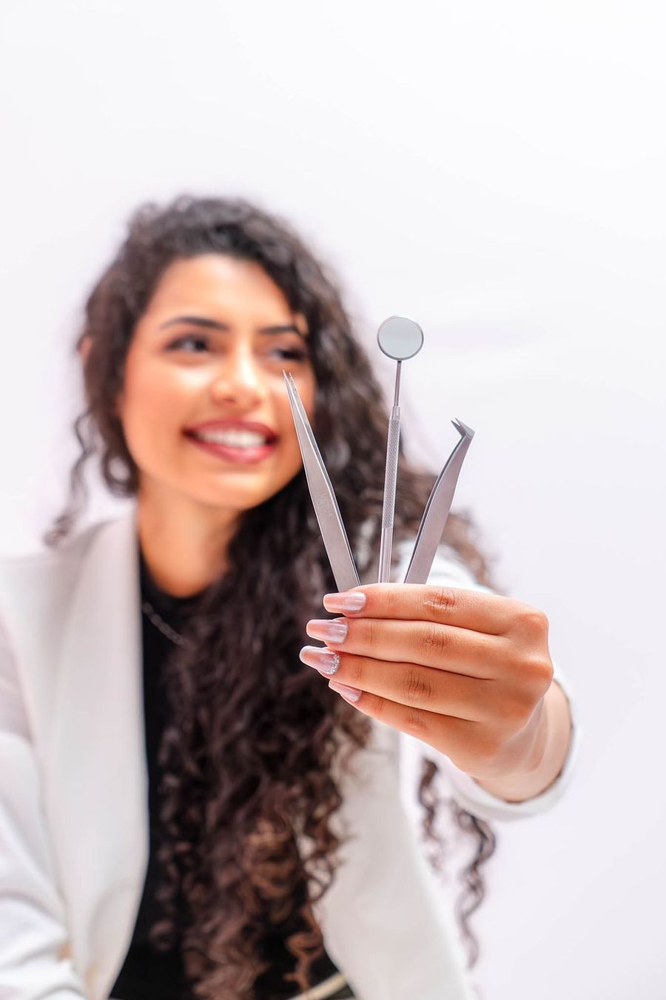
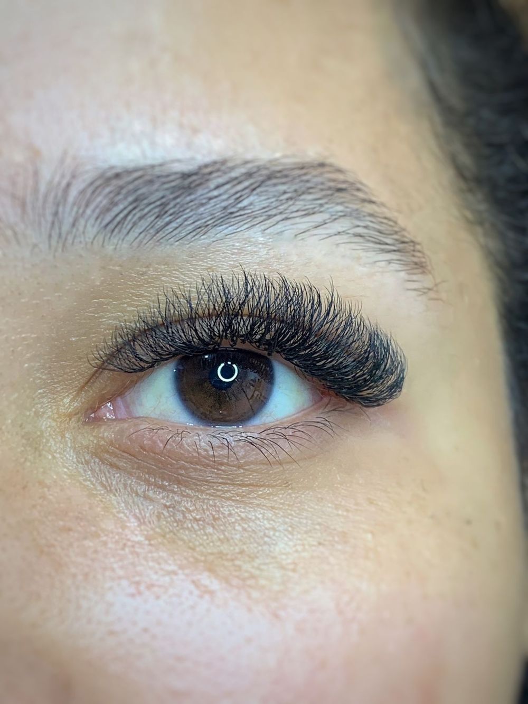
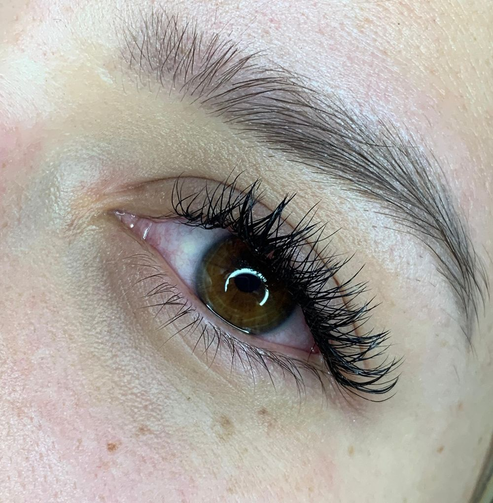
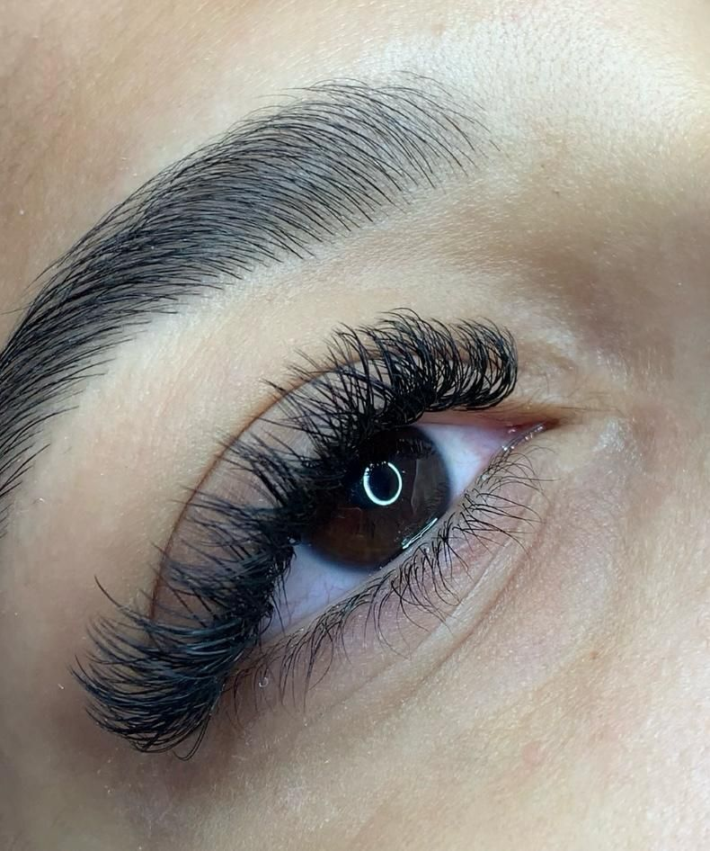
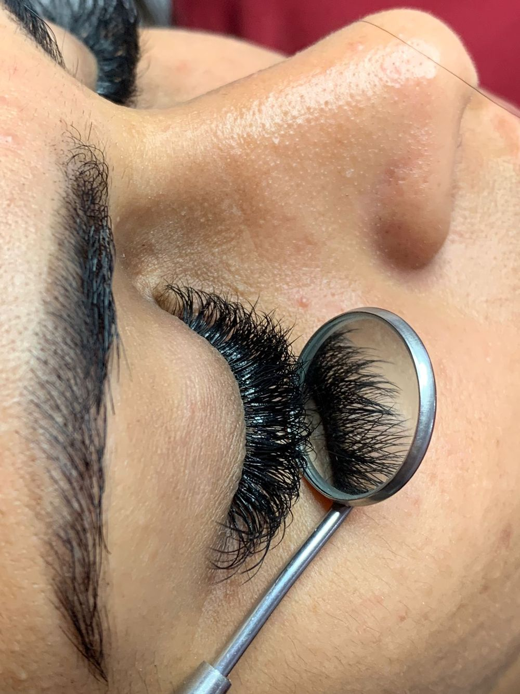
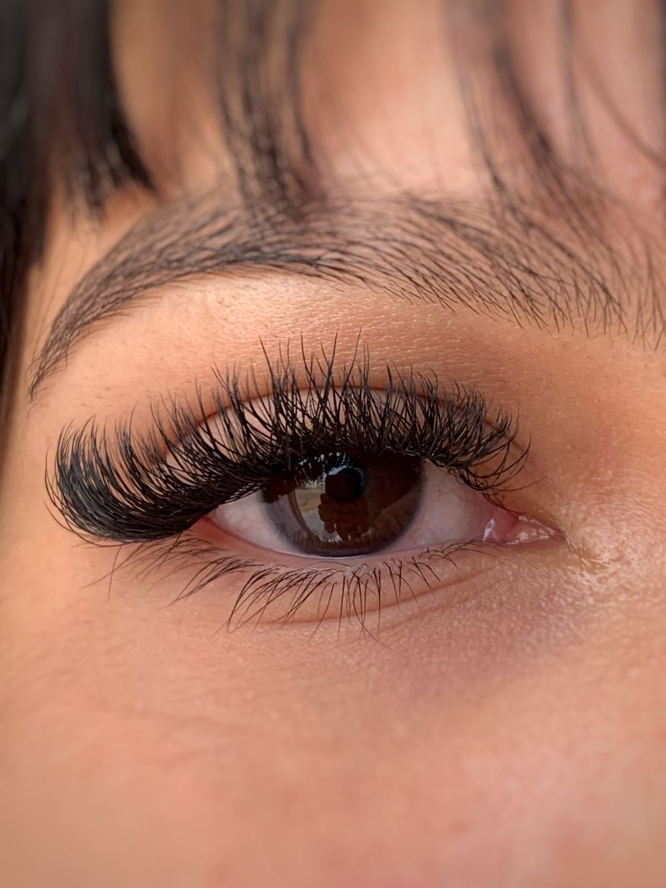
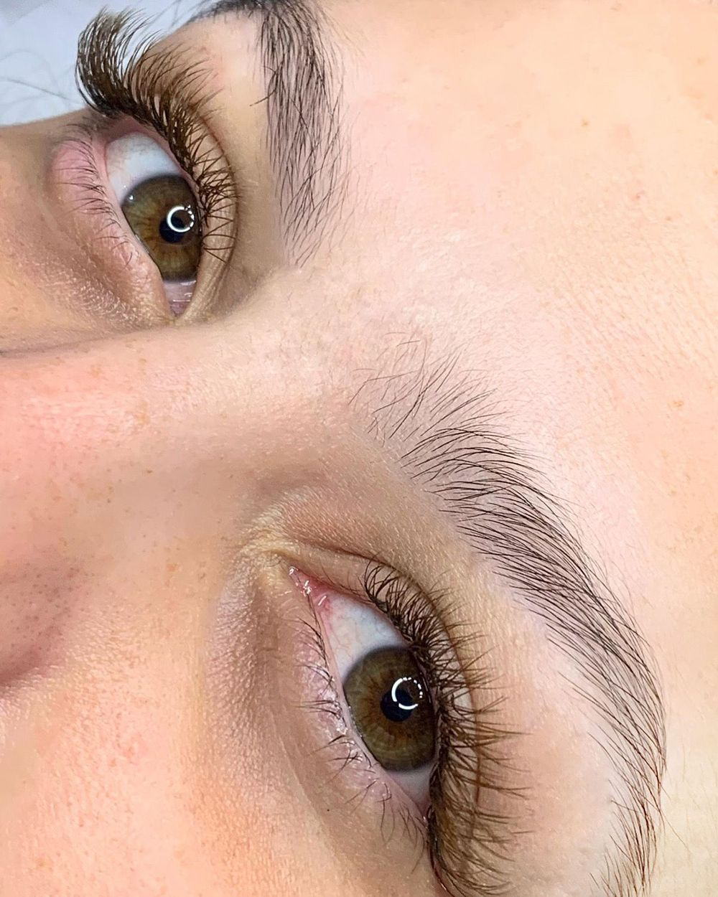

Studio Giseli Costa
Cílios e sobrancelhas em Vilhena. Realçando seu olhar com arte.
Nota 5,0 no Google, com 9 avaliações


Quem atende você
Com dedicação ao mundo da beleza, Giseli Costa é especialista em realçar a beleza natural dos olhares. O diferencial está no compromisso com cada detalhe e no aperfeiçoamento constante das técnicas, sempre com atendimento exclusivo e personalizado.
Serviços
Cílios
- Brasileiro
- Brasileiro marrom
- Volume inglês
- Volume inglês marrom
- Efeito fox
Sobrancelhas
- Design personalizado
- Design com henna
- Design com tintura
- Design com linha
Não sabe qual escolher? Chame no WhatsApp e tire suas dúvidas.
Trabalhos





O que as clientes dizem
“Cílios maravilhosos, espaço super aconchegante e a moça super simpática. Volto sempre!”
“Atendimento maravilhoso, qualidade dos cílios impecável e ambiente muito aconchegante. Amei.”
“Queria agradecer pelo trabalho incrível que você fez no meu olhar. Estou me sentindo maravilhosa. Obrigada pelo atendimento, pelo chazinho e pela tarde adorável que tive com você. Seu trabalho é incrível!”
Ver mais depoimentos
“Como é bom ter nossos momentos de autocuidado, melhor ainda quando encontramos pessoas que fazem o que amam. Hoje conheci o trabalho da Giseli, que pessoa maravilhosa e talentosa! Uma ótima profissional. A partir de agora não largo mais. Amei o resultado.”
“Gosto muito do atendimento e principalmente do resultado. A Giseli me atendeu muito bem desde a primeira vez que fiz os cílios. Ela sempre consegue encaixar um horário que seja bom para mim e, desde a primeira vez, me deixou super confortável. Foi o que me fez ir mais vezes (e, claro, o resultado maravilhoso que ela entrega). Recomendo muito e já indiquei para algumas amigas.”
Como chegar
Studio Giseli CostaAos fundos da Auto Elétrica Central
R. Prof. Ulisses Rodrigues, 582
Jardim Eldorado, Vilhena, RO
CEP 76980-000
WhatsApp e telefone: (69) 99344-2887
Abrir rota no Google MapsAgende seu horário
Chame no WhatsApp e combine o melhor horário para você.